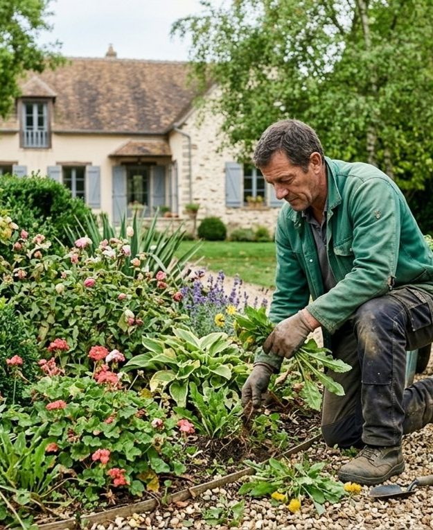

Création de jardins
Aménagement de massifs, de pelouses et d'allées selon vos envies.
En savoir plus →Paysagiste au Pecq (78)
NINA PAYSAGES aménage et entretient jardins et espaces verts au Pecq. Contactez-nous pour parler de votre projet.

Nos prestations
De la création à l'entretien, les principales prestations proposées.
Aménagement de massifs, de pelouses et d'allées selon vos envies.
En savoir plus →


À propos
NINA PAYSAGES est une entreprise d'aménagement paysager installée au Pecq, dans les Yvelines.

Contact
Contactez NINA PAYSAGES pour parler de votre projet de jardin.
Le Pecq (78)
© NINA PAYSAGES · Maquette de démonstration